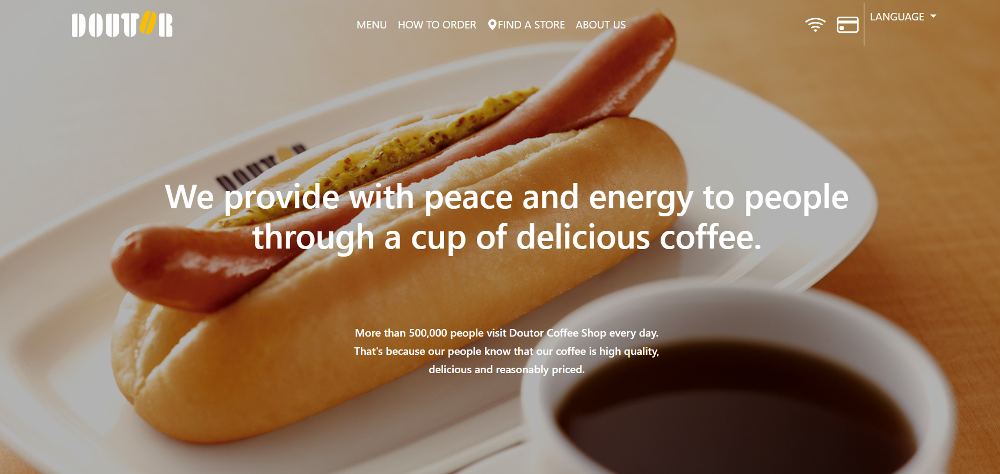
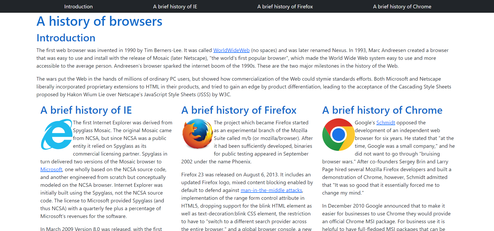

The root of cookie-cutter websites is UI frameworks
05 Oct 2023What are UI frameworks?

https://www.irasutoya.com/2014/04/blog-post_2274.html
While I am sure anyone working in a field even slightly related to the internet has heard of the terms HTML and CSS, but unless you study website design there is a high chance you might not know about UI frameworks (I certainly didn’t until I took my first ICS class). UI frameworks give developers access to a library of useful CSS classes and JavaScript functions. Think of it like a build your own stuff animal store (definitely not thinking of a particular teddy bear store…). The store provides all the different parts, and you get to select what you want and stick it together. UI frameworks work the same way. For this reason many people enjoy using them. At the same time, the “pre-made” nature of it can be a turn off for others.
In my software engineering journey, I have only just started learning about HTML, CSS, and UI frameworks. In particular I have been working with the Bootstrap 5 UI framework. Personally I have found it infuriating and frustrating, however I can see it’s benifits and plan to continue using it. Below I summarize the pros and cons (some being of my own opinion) and provide a case study from my own work thus far. By the end of it all, I hope you will come to understand the cookie cutters of the internet: UI frameworks.
Reasons why UI Frameworks are great
Enables rapid development
Since UI frameworks come with a lot of useful structures straight out of the package, it allows developers to quickly make mock-ups. This can significantly speed up the design process. UI frameworks like Bootstrap are designed to handle a variety of viewing situations (desktop, laptop, etc.). Bootstrap specifically is a "mobile-first" meaning it doesn't require special code to display a website in a format befitting a mobile screen.
Encourages creation of websites
For those of us who despise coding in pure HTML/CSS UI frameworks are like a gift from heaven. It allows us to develop pages without needing to memorize complex syntax. It also makes web development (relatively) beginner friendly.
Less wasted time
More than just rapid development, by not "reinventing the wheel" developers are able to commit their time and energy to other things. Need I say more?
Reasons to not use UI Frameworks
Lack of customization
This is the number one complaint I hear (and the source of this essay's title). As is inherit with using pre-made parts, the customizations available to developers are limited. Often times it turns into a battle of specificity as one tries to ensure their formatting doesn't get overwritten by the framework's settings. This can lead to websites looking like copies of one another, thereby decreasing the diversity on the web.
Steep learning curve
This may be more of a personal opinion, but I find learning Bootstrap 5 to be an arduous task. One must memorize the various class names word for word and understand where to add them for the best results. Additionally I have yet to come across a pieces of software that can suggest proper code or give hints. While it allows for quick development in the early stages, I find myself wasting time searching through the documentations for a specific keyword I missed.
A quick case study
Finally, I'd like to wrap up this essay with a comparison of two of my more recent works. Keep in mind I am just starting my journey so please take this with a large grain of salt.
|
With UI Framework (Bootstrap 5)  |
Without UI Framework (Bootstrap 5)  |
|---|---|
|
- Clean, attractive design - Complex navbar - Implementation of a dropdown menu - Easy to implement |
- Simplistic design - Minimal implementation of interactive parts - Time-intensive if customized |